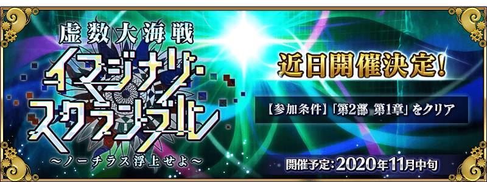
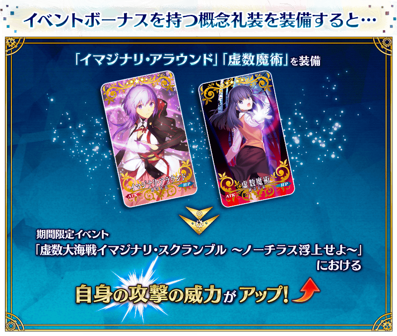

期間限定活動「虛數大海戰Imaginary Scramble ～鸚鵡螺浮出吧～」舉辦預定！
鸚鵡螺號的「虛數潛航」訓練中，全員突然遇上麻煩。
為了從虛數空間逃脫，開始在虛數之海的探索。
走遍無數的海域，從虛數之海回歸吧！
本活動是描寫第2部 第4章「Lostbelt No.4 創世滅亡輪廻 由伽・剎多羅 黑色最終之神」之後的故事。
並且，撰寫劇本的是由『人狼村之謎レイジングループ(KEMCO)』、『鎌切村忌譚(“收錄在FGO推理小說選集・迦勒底的事件簿 file.02” )』作者amphibian氏擔任！
敬請期待對應破例以『虛數空間』為舞台的活動，也能說破例地與外部寫手的合作活動！
◆活動舉辦預定◆
2020年11月中旬
◆活動參加條件◆
滿足以下條件的御主才能參加
・通過第2部 第1章「Lostbelt No.1 永久凍土帝國 安娜塔西亞 獸國的皇女」
※不需要通過亞種特異點(從Ⅰ到Ⅳ)。
※文字冒險部份包含第2部 第2章～第2部 第4章的一部份內容。
注意
本活動的參加條件雖然通過是第2部 第1章節，但由於本活動是相當於在第2部 第4章之後的故事，本活動的故事會包含有關第2部 第2章～第2部 第4章的內容。關於尚未通過到第2部 第4章的參加玩家，敬請見諒包含一部份劇透。
◆有關從者真名的注意◆
在2018年12月31日(二) 23:00以後新配信的主線故事及期間限定活動、一部份關卡、宣傳活動及召喚中，會顯示隱藏真名的對象從者真名。
※2018年12月31日(一) 22:59前已經配信的主線故事、復刻活動、一部份關卡中不在此限。
期間中，除了本活動的文字冒險部份中活躍的從者外，「穿著泳裝的從者」及「夏日活動中追加靈衣的男性從者」會成為活動加成的對象，在活動關卡中會得到「自身的攻擊威力提升」與「活動道具的掉落獲得數提升」及關卡通過時に「絆點數獲得量提升」的加成！
關於「夏日活動中追加靈衣的男性從者」，就算穿著靈衣的情況也不會對活動加成的效果量有所變化，本活動是在虛數之海展開，請務必穿著海相關的靈衣享受活動！
另外，一部份概念禮裝在活動關卡中會得到「自身的攻擊威力提升」的加成！
強化對象從者與概念禮裝，挑戰活動吧！
※活動加成的效果量因從者而異。

【活動加成的對象從者】
| 職階 | 稀有度 | 從者名 |
|---|---|---|
| Saber | ★★★★★ | 西格魯德 |
| ★★★★ | 葛飾北齋 | |
| ★★★★ | 齊格飛 | |
| ★★★★ | 女王梅芙 | |
| ★★★★ | 巴御前 | |
| ★★★★ | 弗蘭肯斯坦 | |
| ★★★★ | 蘭陵王 | |
| Archer | ★★★★★ | 阿爾托莉亞・潘德拉剛 |
| ★★★★★ | 貞德 | |
| ★★★★ | 安妮・伯妮＆瑪莉・瑞德 | |
| ★★★★ | 伊莉雅絲菲爾・馮・愛因茲貝倫 | |
| ★★★★ | Emiya | |
| ★★★★ | 海倫娜・布拉瓦茨基 | |
| ★★★★ | 刑部姬 | |
| ★★★ | 羅賓漢 | |
| Lancer | ★★★★★ | 玉藻前 |
| ★★★★ | 茨木童子 | |
| ★★★★ | 清姬 | |
| ★★★★ | 虞美人 | |
| ★★★★ | 謎之Alterego・Λ | |
| ★★★★ | 源賴光 | |
| Rider | ★★★★★ | 阿爾托莉亞・潘德拉剛〔Alter〕 |
| ★★★★ | 伊絲塔 | |
| ★★★★ | 卡米拉 | |
| ★★★★ | 紫式部 | |
| ★★★★ | 莫德雷德 | |
| Caster | ★★★★★ | 斯卡哈＝斯卡蒂 |
| ★★★★★ | 尼祿・克勞狄烏斯 | |
| ★★★★★ | 梅林 | |
| ★★★★ | 吉爾伽美什 | |
| ★★★★ | 瑪莉・安東尼 | |
| ★★★ | 吉爾・德・雷 | |
| Assassin | ★★★★ | 牛若丸 |
| ★★★★ | 沖田・J・總司 | |
| ★★★★ | 斯卡哈 | |
| ★★★★ | 尼托克里絲 | |
| ★★★★ | 武則天(不夜城的Assassin) | |
| ★★★ | 風魔小太郎 | |
| Berserker | ★★★★★ | 項羽 |
| ★★★★★ | 宮本武藏 | |
| ★★★★ | 織田信長 | |
| ★★★★ | 貞德〔Alter〕 | |
| ★★★★ | 布倫希爾德 | |
| Ruler | ★★★★★ | 阿爾托莉亞・潘德拉剛 |
| ★★★★ | 瑪爾大 | |
| Avenger | ★★★★★ | 巖窟王 |
| MoonCancer | ★★★★★ | 殺生院祈荒 |
| ★★★★★ | BB | |
| ★★★★ | BB | |
| Foreigner | ★★★★★ | 阿比蓋爾・威廉斯 |
| ★★★★★ | 阿比蓋爾・威廉斯〔夏〕 | |
| ★★★★★ | 葛飾北齋 | |
| ★★★★★ | Voyager | |
| ★★★★★ | 楊貴妃 | |
| ★★★★ | 謎之女主角XX | |
| Shielder | ★★★ | 瑪琇・基利艾拉特 |
※就算成為對象從者也會有未在本活動的主線劇本登場的情況。 ※自11月4日(三) 17:00，在從者選擇畫面和從者強化畫面等，追加活動加成篩選器。由於是只顯示於活動活躍從者的便利功能，敬請活用。
其他還有，『「虛數大海戰Imaginary Scramble ～鸚鵡螺浮出吧～」開幕前夕宣傳活動』和期間限定『「虛數大海戰」開幕前夕Pick Up召喚(每日交替)』同時舉辦！
關於詳情，請自下述橫幅確認。
■「虛數大海戰Imaginary Scramble ～鸚鵡螺浮出吧～」開幕前夕宣傳活動詳細情報

■「虛數大海戰」開幕前夕Pick Up召喚(每日交替)詳細情報